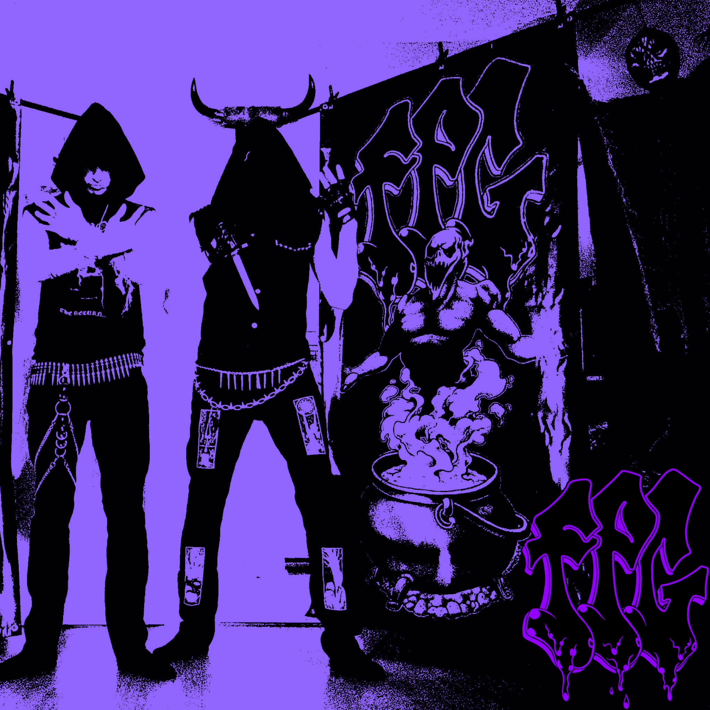

About FPG
Formed in Regina, Saskatchewan in 2012 by guitarist/songwriter Eliot Torrens and drummer Adam Horvery. FPG is a true Metal-Punk freakshow hybrid. Our sound is influenced by old school rock and roll madness from the putrid ancient crypts.
Since our inception, we’ve been terrorizing the sonic landscape of extreme music, performing hundreds of live shows and crafting our discography with a distinct disdain for the outside world! Welcome to the chamber of the unholy lords of FPG!
Now consisting of a three piece line up featuring: Adam Horvey - Drums, Noah Biegler - Bass, Eliot Torrens - guitar/vocals.
WORSHIP THE ROCK AND ROLL WEREWOLF!